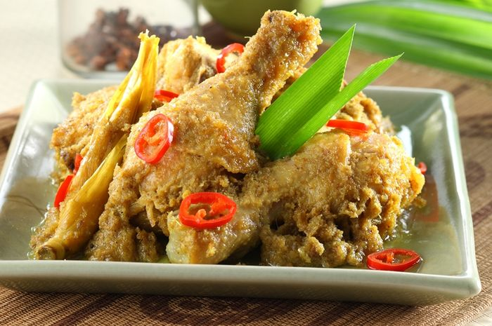

<< Daftar Resep
Kuliner Khas Makassar - Ayam Gagape
bahan |
bumbu |
cara membuat

Ayam Gagape
Bahan- bahan :
- 1 ekor ayam kampung, potong menjadi delapan bagian daging ayam
- 1 sdm bawang goreng
- 500 ml santan dari 1 butir kelapa
Haluskan
- 4 siung bawang putih
- 8 butir bawang emrah
Bumbu :
- 1 sdt merica
- 1 butir jeruk nipis, ambil airnya
- 2 batang serai, memarkan
- 1 cm lengkuas, memarkan
- 3 lembar daun salam
- 1/2 buitr kelapa, parut, sangrai, tumbuk
- 1 sdm garam
Cara Buat :
- Lumuri ayam dengan air jeruk nipis dan bumbu yang sudah dihaluskan, biarkan selama 15 menit.
- Rebus santan, serai, lengkuas, daun salam, dan garam dengan api sedang hingga santan mendidih. Aduk sesekali agar santan tidak pecah.
- Masukkan ayam yang sudah dilumuri bumbu dan kelapa sangrai, aduk terus hingga ayam empuk. Angkat
- Sajikan dengan taburan bawang goreng.
Kembali ke atas
<< Daftar Resep